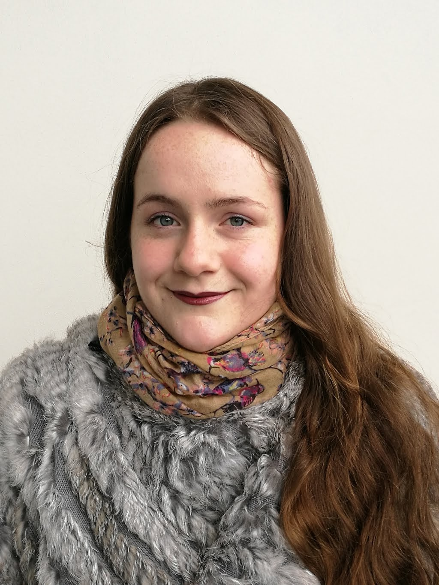

I am a third-year English Literature student, minoring in Cultural Studies. I have an interest in design, and am currently taking a Web Development course in my own time.
Education
University of Canterbury
2019 - Current
Bachelor of Arts (English Literature)
Literature Analysis
Academic Research
Creative Writing
Bi-cultural Awareness
Copywriting
Te Kura Correspondence School
NCEA Level 3
NCEA Level 2
NCEA Level 1
Work Experience
Private Art Tutor
2017-2019
Lesson planning
Liasing with parents
Student confidence building
Adapting lesson plans to meet individual student needs